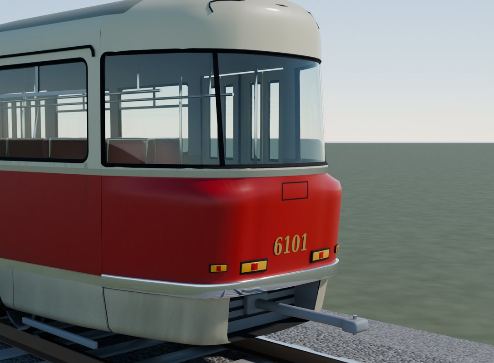
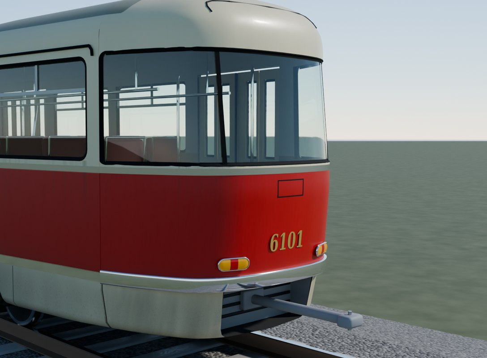

Six fixes from the marked screenshot: pantograph lower bracing, roof corner, red band at the corner, the two corner lamps and the box under the skirt. The photo of prototype 6102 decides where it disagrees with the drawings; everything else is measured on flat-colour renders against the drawings, in millimetres.
Features within ±15 mm, before → after, for each view.


| Feature | Drawing | Before | Dev. | After | Dev. |
|---|---|---|---|---|---|
| Rear | |||||
| rear window left edge (y 2.10) | -978 | -1 054 | -76 | -1 055 | -77 |
| rear window right edge (y 2.10) | 880 | 930 | 50 | 930 | 50 |
| left bar centre (y 2.10) | -608 | -605 | 3 | -605 | 3 |
| right bar centre (y 2.10) | 616 | 612 | -4 | 613 | -3 |
| left pane width (y 2.10) | 336 | 434 | 98 | 435 | 99 |
| right pane width (y 2.10) | 230 | 303 | 73 | 302 | 72 |
| rear window panes (y 2.10) | 3 | 3 | 0 | 3 | 0 |
| rear window left edge (y 1.85) | -978 | -1 055 | -77 | -1 056 | -78 |
| rear window right edge (y 1.85) | 880 | 930 | 50 | 930 | 50 |
| left bar centre (y 1.85) | -605 | -604 | 1 | -605 | 0 |
| right bar centre (y 1.85) | 613 | 612 | -1 | 613 | 0 |
| left pane width (y 1.85) | 339 | 436 | 97 | 436 | 97 |
| right pane width (y 1.85) | 233 | 303 | 70 | 302 | 69 |
| rear window panes (y 1.85) | 3 | 3 | 0 | 3 | 0 |
| rear window top at zv -0.85 | 2 505 | 2 502 | -3 | 2 502 | -3 |
| rear window bottom at zv -0.85 | 1 702 | 1 702 | 0 | 1 701 | -1 |
| rear window top at zv +0.00 | 2 502 | 2 501 | -1 | 2 501 | -1 |
| rear window bottom at zv +0.00 | 1 702 | 1 701 | -1 | 1 701 | -1 |
| rear window top at zv +0.75 | 2 498 | 2 503 | 5 | 2 505 | 7 |
| rear window bottom at zv +0.75 | 1 702 | 1 700 | -2 | 1 698 | -4 |
| door strip inner edge (y 2.0) | 944 | 1 064 | 120 | 1 065 | 121 |
| door strip outer edge (y 2.0) | 1 204 | 1 262 | 58 | 1 262 | 58 |
| door strip inner edge (y 1.2) | 944 | 1 068 | 124 | 1 066 | 122 |
| door strip outer edge (y 1.2) | 1 210 | 1 263 | 53 | 1 263 | 53 |
| door strip top | 2 556 | – | – | – | – |
| door strip bottom | 326 | – | – | – | – |
| red top at zv -0.8 | 1 595 | 1 606 | 11 | 1 607 | 12 |
| red top at zv +0.7 | 1 592 | 1 606 | 14 | 1 607 | 15 |
| Left side | |||||
| rear corner window front edge As above. | -5 998 | -6 004 | -6 | -6 004 | -6 |
| rear corner window rear edge The corner window follows the new single corner curve, so in side view it ends 40-50 mm further back and starts ~40 mm further back than drawn. | -6 775 | -6 770 | 5 | -6 828 | -53 |
| rear corner window top at x -6.10 | 2 500 | 2 502 | 2 | 2 502 | 2 |
| rear corner window bottom at x -6.10 | 1 711 | 1 702 | -9 | 1 702 | -9 |
| rear corner window top at x -6.45 | 2 500 | 2 502 | 2 | 2 502 | 2 |
| rear corner window bottom at x -6.45 | 1 711 | 1 702 | -9 | 1 702 | -9 |
| roof colour lower edge at x -6.0 | 2 823 | 2 814 | -9 | 2 814 | -9 |
| roof colour lower edge at x -5.0 | 2 823 | 2 814 | -9 | 2 814 | -9 |
| roof colour lower edge at x -4.2 | 2 823 | 2 814 | -9 | 2 814 | -9 |
| roof colour lower edge at x -2.0 | 2 608 | 2 606 | -2 | 2 606 | -2 |
| roof colour lower edge at x +0.6 | 2 608 | 2 606 | -2 | 2 606 | -2 |
| roof colour lower edge at x +2.4 | 2 614 | 2 606 | -8 | 2 606 | -8 |
| roof colour lower edge at x +4.6 | 2 811 | 2 814 | 3 | 2 814 | 3 |
| roof colour lower edge at x +5.6 | 2 817 | 2 814 | -3 | 2 814 | -3 |
| roof colour rear end (y 2.90) | -6 171 | -6 166 | 5 | -6 164 | 7 |
| roof colour front end (y 2.90) | 6 174 | 6 166 | -8 | 6 166 | -8 |
| pantograph platform rear end | 2 487 | 2 546 | 59 | 2 546 | 59 |
| pantograph platform front end | 3 611 | 3 662 | 51 | 3 662 | 51 |
| pantograph rear knee x | 1 616 | 1 672 | 56 | 1 672 | 56 |
| pantograph front knee x | 4 673 | 4 728 | 55 | 4 728 | 55 |
| pantograph centre x | 3 145 | 3 200 | 55 | 3 200 | 55 |
| pantograph rear knee y | 3 915 | 3 921 | 6 | 3 921 | 6 |
| pantograph front knee y | 3 915 | 3 922 | 7 | 3 922 | 7 |
| pantograph: pixels inside the diamond on the centre line | 0 | 0 | 0 | 0 | 0 |
| rear amber light x As above: the outer end of the tail unit. | -6 902 | -6 896 | 6 | -6 888 | 14 |
| rear amber light y As above. | 958 | 959 | 1 | 950 | -8 |
| grey box under skirt, rear, rear end Removed: it stuck out below the skirt where the body narrows to the rear (photo of 6102). | -5 962 | -5 960 | 2 | – | – |
| grey box under skirt, rear, front end As above. | -4 861 | -4 860 | 1 | – | – |
| rear end at y 2.90 The roof now curves down to the window in a larger radius (photo). The right drawing agrees (15 mm); the left drawing has a tighter corner. | -6 829 | -6 840 | -11 | -6 744 | 85 |
| rear end at y 2.60 | -6 901 | -6 888 | 13 | -6 888 | 13 |
| rear end at y 2.30 | -6 901 | -6 902 | -1 | -6 902 | -1 |
| rear end at y 2.00 | -6 943 | -6 936 | 7 | -6 936 | 7 |
| rear end at y 1.45 | -6 991 | -6 990 | 1 | -6 988 | 3 |
| rear end at y 1.20 | -6 967 | -6 964 | 3 | -6 964 | 3 |
| rear end at y 0.95 As above. | -6 997 | -6 948 | 49 | -6 938 | 59 |
| rear end at y 0.80 | -7 020 | -6 958 | 62 | -6 958 | 62 |
| rear end at y 0.40 The skirt follows the same rounded corner. The right drawing agrees; the left drawing draws the rear end straight (as in earlier rounds). | -6 823 | -6 768 | 55 | -6 732 | 91 |
| Right side (door side) | |||||
| red top at x -6.5 | 1 606 | 1 606 | 0 | 1 608 | 2 |
| red top at x -3.8 | 1 600 | 1 608 | 8 | 1 608 | 8 |
| red top at x -2.2 | 1 594 | 1 608 | 14 | 1 608 | 14 |
| red top at x +1.6 | 1 594 | 1 608 | 14 | 1 608 | 14 |
| red top at x +3.9 | 1 588 | 1 608 | 20 | 1 608 | 20 |
| red top at x +6.3 | 1 477 | 1 480 | 3 | 1 480 | 3 |
| rear end at y 2.90 The roof now curves down to the window in a larger radius (photo). The right drawing agrees (15 mm); the left drawing has a tighter corner. | -6 759 | -6 840 | -81 | -6 744 | 15 |
| rear end at y 2.60 | -6 855 | -6 888 | -33 | -6 888 | -33 |
| rear end at y 2.30 | -6 879 | -6 902 | -23 | -6 902 | -23 |
| rear end at y 2.00 | -6 914 | -6 936 | -22 | -6 936 | -22 |
| rear end at y 1.45 | -6 968 | -6 990 | -22 | -6 988 | -20 |
| rear end at y 1.20 | -6 944 | -6 964 | -20 | -6 964 | -20 |
| rear end at y 0.95 As above. | -6 950 | -6 948 | 2 | -6 938 | 12 |
| rear end at y 0.80 | -6 968 | -6 958 | 10 | -6 958 | 10 |
| rear end at y 0.40 The skirt follows the same rounded corner. The right drawing agrees; the left drawing draws the rear end straight (as in earlier rounds). | -6 747 | -6 768 | -21 | -6 732 | 15 |
| rear corner window rear edge The corner window follows the new single corner curve, so in side view it ends 40-50 mm further back and starts ~40 mm further back than drawn. | -6 777 | -6 764 | 13 | -6 824 | -47 |
| rear corner window front edge As above. | -6 209 | -6 216 | -7 | -6 248 | -39 |
| rear corner window top | 2 506 | 2 504 | -2 | 2 502 | -4 |
| rear corner window bottom | 1 735 | 1 702 | -33 | 1 702 | -33 |
| rear corner lamp x The lamp on the side wall is gone. What this reading now finds is the outer end of the tail unit, which shows round the curved corner. | -6 901 | -6 896 | 5 | -6 888 | 13 |
| rear corner lamp y As above. | 969 | 960 | -9 | 950 | -19 |